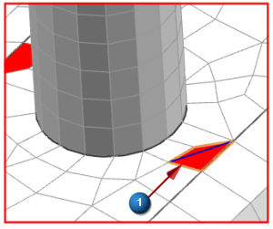
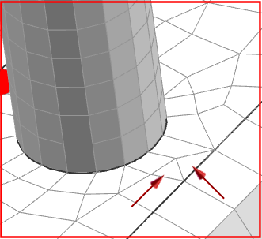

Split failed elements
|
Nodes and Elements |
 Split Shell (Elements group)
Split Shell (Elements group)
-
Type
Quad to 2 Triangles

-



-
Tip
An equilateral triangle is the ideal shape for a triangular element. To best approximate this shape, split quad elements along their shortest diagonal.
-
OK
-
If the elements resulting from the split pass the quality checks, they are no longer highlighted in the display.

-
Repair the remaining failed elements using the Split Shell command.